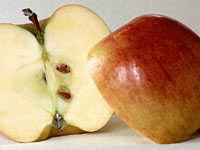
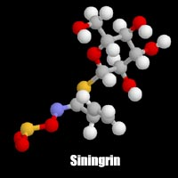
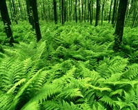
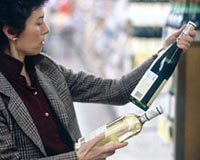
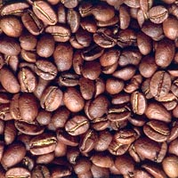
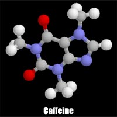
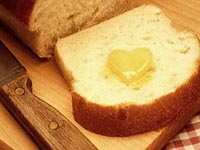
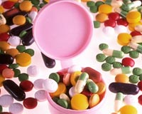

|

By now, you are probably wondering if there is merit in eating all natural foods and avoiding the processed, packaged and convenience foods in the grocery store. Some nutrition experts suggest that when shopping for groceries, you should choose items from the four basic food groups, all of which can be located on the outer aisles of the store. The fresh, unprocessed foods may be found there. Are these foods free of additives and toxins? No way! There are more cases of food poisoning from natural sources than from additives. By definition, a carcinogen is a substance or agent that causes cancer. A substance may be referred to as carcinogenic as long as there is at least one animal study showing a carcinogenic effect. A mutagen is a substance that can produce heritable genetic changes, or mutations, in the genetic material of an organism (except for some viruses, this genetic material is always DNA). Some mutagens convert a healthy cell into a cancerous one. The natural reaction of learning of carcinogens in foods is to avoid eating those foods, if one can. Is this possible? You might think so, yet no human diet can be free from all carcinogens or toxic substances. Almost every food we consume contains some type of harmful substance; naturally or produced during food preparation. A report by the American Council on Science and Health: "Does Nature Know Best?" details natural carcinogens occurring in food common to North American diets. The following section was written using this report as a reference.
|
| 
Allyl isothiocyanate
A naturally occurring flavour in mustard and horseradish, it is also present in lower amounts in broccoli and cabbage. Its molecular structure is shown to the left. |
Pyrrolizidine alkaloids
Herbs and herbal teas contain these carcinogenic, mutagenic and teratogenic (capable of causing birth defects when administered to pregnant animals) compounds. The more common of these chemicals is symphytine found in comfrey. A tea is often made from this daisy-like herb and is commonly sold in health food stores. Pure symphytine has been found to cause liver tumors in rats.
 Substances in bracken fern
If you have ever eaten fiddlehead greens, commonly used as human food in greens and salads, then you have most likely ingested mutagenic and carcinogenic compounds. Several chemicals are found in the fern including quercetin, kaempferol and tannins. Human consumption of bracken fern had been linked to an increased incidence of esophageal cancer in Japan.
Safrole, estragole, beta-asarone and isosafrole
All these chemicals are alkenyl benzenes and are found in many spices and herbs and in a few vegetables. Safrole (causes mainly liver cancer in rats) is found in sassafras tea and makes up 75 percent of oil of sassafras, which was once used to flavour root beer. It has been banned as a flavour additive since 1960, but is a minor component of nutmeg, mace, star anise, cinnamon and black pepper. Black pepper contains piperine, a closely related compound in larger amounts.
Estragole is found in tarragon, basil, and fennel. It causes liver cancer in mice. Beta-asarone is a major component of oil of calamus and has been used to flavour bitters and vermouth. It causes intestinal tumors in rats. Isosafrole is a component of ylang-ylang oil (a flavourant and scent).Other compounds that are closely related are not known (yet) to be carcinogenic. The chemicals are present in various foods such as cloves, allspice, artichokes, mace, carrots, parsnips, bananas, parsley, avocados and fennel.
Tannins
Tannins cause liver cancer in rats and mice. They occur in coffee, tea, red wine, bracken fern and many other foods derived form plants. The Betel nut has a high tannin content and habitual nut-chewers (mainly in India and Pakistan) have a high incident of carcinoma of the mouth. Esophageal cancer is high in an area of South Africa where there is a high consumption of tannin-containing sorghum.

|
Ethyl carbamate A naturally occurring chemical in fermented foods and beverages, ethyl carbamate cause tumors in a wide variety of tissues. The chemical is also found in bread, yogurt and soy sauce. |
Estrogenic substances
Estrogens of animal origin administered in high amounts to rats cause (or promote) cancer in hormonally sensitive organs (mammary glands and uterus). Plant estrogen compounds are found in hops, soybeans and alfalfa. These plant compounds have not shown to be carcinogenic.
 Alcohol
The excessive consumption of alcoholic beverages (especially when combined with tobacco use) has been associated with cancer of the mouth, esophagus, pharynx and larynx in humans. Alcohol has been implicated in liver cancer, and has been shown to cause birth defects (fetal alcohol syndrome). Long term alcoholics face serious liver damage.
In recent studies, however, it has been found that certain alcoholic beverages may be of benefit to the human body. The evidence indicates that it's the alcohol (regardless of the source - that is red wine, white wine, dark or light beer), that provides the greatest benefit by raising high-density lipoprotein, or HDL (the "good" cholesterol), and by decreasing the "stickiness" of blood, making it less likely to clot. Red grape skins (and therefore red wines) contain antioxidants (flavonoids and phenols) that help keep low-density lipoprotein, or LDL (the "bad" cholesterol), from forming plaque and damaging blood vessels. They also have an anti-clotting effect. But again, it's the alcohol that's most beneficial. It's important to note that when it comes to alcohol, health experts agree that moderation is the rule. It's defined as no more than two drinks a day if you're a man and one per day if you're a woman. A drink is 5 ounces of wine (12 percent alcohol), 12 ounces of beer (5 percent alcohol), or 1.5 ounces of liquor (40 percent alcohol).
On the negative side, red-wine drinkers had a 26 percent increase in triglyceride levels, a type of blood fat associated with risk of heart disease. Furthermore, Lavy found no decrease in blood clotting among either the red- or white-wine drinkers.
| 
Substances in Coffee
Does that cup of coffe taste really good after breakfast? Well, consider this: a cup of coffee is estimated to contain over 2,000 natural occurring chemical components some of which are highly mutagenic (causes changes in the cell genes). Many mutagens are also carcinogens. One cup of coffee has the equivalent of fifty times the mutagenic activity of smoke absorbed from smoking a single cigarette. Diacetyl (aromatic component) is a mutagen, as are glyoxal and methyl glyoxal. The latter is present in fresh brewed coffee at a concentration of 0.5 mg per cup. The chemical can also be found in bourbon whiskey, wine, apple brandy, sake, toasted bread, soy sauce, tomatoes, boiled potatoes, and roast turkey. Hydrogen peroxide is found in large amounts in coffee.  About 250 mg of chlorogenic acid (mutagen) is in one cup of coffee along with benzo(a)pyrene, tannins and, of course, caffeine. Caffeine is toxic in large amounts. The amount of caffeine in 100 cups of coffee can cause convulsions in humans and death if ingested in a single dose. The molecular structure of this chemical is shown at the left. |
| 
Diacetyl in butter This mutagenic component, also found in coffee, makes up the aroma of butter. |
Other Toxic Compounds
There are several other compounds which have been found (or believed) to be carcinogenic in foods. Foods containing these substances include alfalfa sprouts, apricots, apples, peaches, cherries, pears, plums, almonds, lima beans, corn, yams, chickpeas, cashew nuts and kirsch. Bruised potatoes and potatoes that have begun to sprout contain large amounts of a potentially lethal compound (solanine and chaconine - cholinesterase inhibiters affecting nerve transmissions).
Is Our Food Safe?
The answer to this question depends on different factors. We eat and we survive the day. We eat again, and still we survive. Food is not perfect - from a safety aspect, but remember that the amount of food we consume and the types of foods directly impacts this "safety". The normal diet contains substantial amounts of carcinogens and mutagens, but it also contains anticarcinogens. These are substances that seem to counteract the action of carcinogens. Anticarcinogenic substances include:
- vitamin A and its precursors (beta-carotene)
- vitamin E
- vitamin C
- glutathione
- purines
- selenium
 Taking supplements of these anticarinogenic compounds is generally not neccessary for people with healthy diets. In some cases, overloading on certain substances, like Vitamin A, can have the reverse effect and the anitcarcinogens become toxic in high enough doses.
Plants are complex organisms composed of chemicals; humans and animals are the same way. The way these chemicals interact within the organism results in the formation or breakdown of substances; some of these being carcinogenic and mutagenic. Interestingly, the amounts of nature's pesticides present in foods is of a much larger proportion than that of man-made pesticides. Our bodies have the task of getting rid of toxic substances on a regular basis. Eating sensibly and eating a wide variety of foods reduces the risk of any single carcinogen entering our system in quantities that would overwhelm the body's natural; ability to handle low amounts of hazardous substances with relative safety. Remember that the great bulk of our food -- more than 99 percent by weight -- consists of ingredients that Mother Nature put there. Food additives make up less than 1 percent, and pesticide residues and other man-introduced contaminants cannot even usefully be measured at percent levels. It is the way these chemicals interact with our systems and with each other that requires continued investigation.